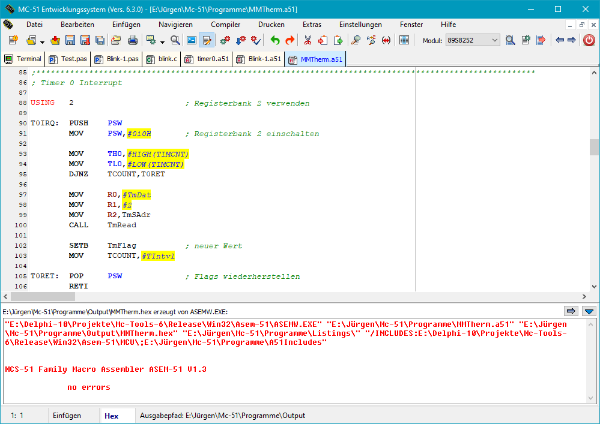
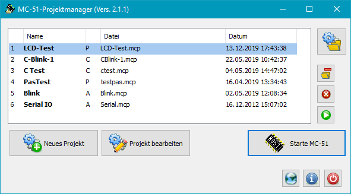

MC-Tools Version 6.3 |
|
| © 2004 - 2021, J. Rathlev, D-24222 Schwentinental |
MC-Tools ist ein unter alle aktuellen Windows-Versionen lauffähiges Programmpaket, mit dem sich Anwendungen für Mikrocontroller der 8051-Familie (Siemens, Philips, Atmel, etc.) erstellen lassen. Es enthält eine Entwicklungsumgebung (IDE) für die Quelltexterstellung und Compilierung, einen Simulator, um die erstellten Programme auf dem PC zu testen, eine Projektverwaltung und Hilfsprogramme für die Flash-Programmierung.

Die Compiler ASEMW, Turbo51 und SDCC sind Programme, die über die Befehlszeile gesteuert werden. Zur Übersetzung von Quellprogrammen müssen sie mit den erforderlichen Parametern aufgerufen werden. Dies erledigt die Entwicklungsumgebung MC51 automatisch auf Knopfdruck. Die Ausgabe dieser Programme (insbesondere eventuelle Fehlermeldungen) wird im unteren Teil des Desktop-Fensters eingeblendet. Mit einem Klick auf eine Fehlermeldung wird die Positionsmarke des Editors direkt auf die fehlerhafte Zeile gesetzt.
Da es viele Mikrocontroller in der 8051-Familie gibt, die sich in der Struktur der Special-Function-Register (SFR) unterscheiden, muss am Anfang des Quelltextes das passende Modul per Include-Befehl, bzw. bei Pascal die entsprechende Unit eingebunden werden. Das MC-Tools-Paket enthält Module und Units für alle gängigen Mikrocontroller der 8051-Familie. Beim Anlegen einer neuen Quelltext-Datei fügt die Entwicklungsumgebung automatisch den für den ausgewählten Mikrocontroller benötigten Quellcode in den Text ein (siehe die Auswahlliste oben rechts in der Werkzeugleiste). Entsprechend wird beim Laden eines Quelltextes das dort verwendete Modul automatisch erkannt.
Für die Kommunikation mit einer Mikrocontroller-Experimentierplatine über die
serielle Schnittstelle wird in MC-51 ein Terminal-Modus bereit gestellt.
Die für die Verbindung erforderlichen Parameter können über das Hauptmenü
eingestellt werden.
Die Anzeige ist in zwei Fenster aufgeteilt: Im oberen Teil
werden die über die serielle PC-Schnittstelle empfangenen Daten angezeigt,
im unteren die von der Tastatur eingegeben zu sendenden Daten. Wenn im
Mikrocontroller ein Monitor-Programm wie z.B.
PAULMON
installiert wurde, können außerdem Hex-Dateien, die vom Assembler, dem Pascal-Compiler
oder dem C-Compiler erzeugt wurden, in den Mikrocontroller-Speicher herunter geladen werden.
Mit dem Simulator / Debugger können kleine Programm ohne
externe Hardware getestet werden. Es stehen alle üblichen Debug-Funktionen
(Start, Stopp, Einzelschritt, Schritt über Unterroutinen, Lauf bis zu einer
ausgewählten Zeile) zur Verfügung. An jeder Stelle können außerdem Haltepunkte
gesetzt werden, und das zu testende Programm kann auch Schritt-für-Schritt ausgeführt
werden.
Der Simulator zeigt sowohl den Quellcode mit den
Adressmarken als auch die Adressen und den kompilierten Code im Hex-Format an.
Alle Register und Speicherzellen können eingesehen und, falls erforderlich,
verändert werden. Zahlen werden wahlweise im Hex-, Dezimal- oder Binärformat
angezeigt.
Die Port-Anschlüsse (P0,P1,..) werden als SFRs und als Schaltflächen mit einer
LED-artigen Statusanzeige angezeigt. Zum Ändern eines dieser Port-Bits genügt ein Klick auf
die zugehörige Schaltfläche (nur möglich, wenn sie im zu testenden Programm
zuvor als Eingang definiert wurden).
Außerdem werden zwei Timer und eine serielle Schnittstelle (die Ausgabe wird
als Text angezeigt, die Eingabe erfolgt über die Tastatur) simuliert. Eine
Interruptsteuerung für diese Komponenten ist ebenfalls vorhanden. Die beiden
externen Interrupts können über Mausklicks auf die zugeordneten Schaltflächen
ausgelöst werden. Nicht unterstützt wird die Prioritätssteuerung der Interrupts.
Außerdem ist es möglich, die Symbol- und Befehlstabellen für die verschiedenen
Abarten auch direkt zu laden.
Daneben enthält MC-51 ein Modul für die Flash-Programmierung von einigen Atmel-Mikrocontrollern (AT89S51/52 and AT89S8252/8253) über die serielle Schnittstelle. Wie die serielle Schnittstelle mit dem Mikrocontroller verbunden werden muss, kann der Beschreibung der Experimentier-Platine entnommen werden.
Der integrierte Text-Editor verwendet Komponenten des Open-Source-Projekts SynEdit. Neben den üblichen Funktionen eines Editors enthält er eine compilerabhängige Syntax-Hervorhebung des Quelltextes. Viele Einstellungen können individuell angepasst werden.

Mit der Version 6.3 ist es möglich, eine neue Struktur der Quellverzeichnisse
zu verwenden. Dabei werden die Quelltexte der verschiedenen unterstützten Compiler,
sowie deren Includes, Units, bzw. Libraries und Ausgaben in voneinander getrennten Verzeichnissen
abgelegt (siehe Abb. links). Nach einer Erstinstallation erfolgt das Anlegen dieser Struktur
automatisch beim ersten Start des Programms,
bei einem Update wird die von der Vorversion vorhandene Struktur weiter verwendet.
Die Umstellung auf die neue Verzeichnisstruktur kann über den Menüpunkt
Einstellungen ⇒ Stammverzeichnis für Quelltexte ... erfolgen. Man gibt ein neues
Stammverzeichnis an, unter dem dann automatisch die links dargestellte Unterverzeichnis-Struktur
angelegt wird.
Evtl. bereits vorhandene Quelltexte, die mit der Vorversion erstellt wurden, müssen
danach von Hand in die neuen Verzeichnisse kopiert werden. Aus dem Programm heraus kann dies
auch mit der Sichern als ..-Funktion erfolgen.

Für eine effiziente Softwareentwicklung ist es vorteilhaft, häufig verwendete Programmteile in getrennten Module (Include-Dateien beim Assembler und C, Units bei Pascal) unterzubringen. MC-51 kann alle zu einem Projekt gehörenden Programmteile (Hauptprogramm und Module) und die erforderlichen Compiler-Optionen in einer Projekt-Datei abspeichern (siehe dazu). Wird MC-51 mit einer solchen Projekt-Datei in der Befehlszeile gestartet, werden automatisch alle zugehörigen Quelltexte und Einstellungen in die Entwicklungsumgebung geladen.
Das bereit gestellte Installationspaket enthält die oben beschriebenen Programme,
die Standardeinstellungen für den Editor, den
Pascal-Compiler Turbo-51 (Vers. 0.1.3.17), den
Assembler ASEM-51 von
W.W. Heinz,
sowie Include-Module und Units für viele Mikrocontroller der 8051-Familie.
Der C-Compiler SDCC muss getrennt
heruntergeladen
und installiert werden. Beim Start prüft MC51, ob SDCC
auf dem System installiert ist, und integriert es automatisch in das Entwicklungssystem.
Zur Installation startet man das bereit gestellte Windows-Setup (mc-setup-6.x.yy.exe, wobei x.yy für die jeweilige Version steht). Dazu sind unter Windows 7, 8 und 10 die Rechte eines Administrators erforderlich. Die Installation kann in ein beliebiges Verzeichnis erfolgen (Standard: C:\Program Files\Mc-Tools auf 32-Bit-Systemen, bzw. C:\Program Files(x86)\Mc-Tools auf 64-Bit-Systemen). Auf Wunsch werden bei der Installation Verknüpfungen im Startmenü und auf dem Desktop angelegt.
Im Installationsverzeichnis wird die nachfolgende Verzeichnis- und Dateistruktur erstellt:
<Install directory>
mc51.exe Programm
mc51.key Tastaturbelegung für den eingebauten Editor
mc51-asm.hlt Einstellungen für die Syntax-Hervorhebung (Assembler))
mc51-pas.hlt Einstellungen für die Syntax-Hervorhebung (Pascal))
mc51-cco.hlt Einstellungen für die Syntax-Hervorhebung (C-Compiler))
opcodes.mco Liste der 8051-Befehle für den Simulator
8051.mcu Liste der vordefinierten Symbol für den Simulator
mcprojects.exe Projektmanager
checkisp.exe Programm zur Prüfung von Atmel-Mikrocontrollern
und zum Auslesen des Programmspeichers über ISP
diffisp.exe Programm zur Überprüfung von Programmierungen über ISP
<locale> Sprachdateien für MC-Tools (z.Zt.: Deutsch)
<Asem-51> Verzeichnis für Assembler
AsemW.exe Assembler für die Verwendung unter Windows
... Einige andere Programme und die Dokumentation
<Mcu> Verzeichnis für die Include-Module (s.o.)
*.mcu Include-Module für die verschiedenen Mikrocontroller
<Turbo-51> Verzeichnis für Pascal
<bin> Pascal-Compiler
<rtl> Laufzeit-Bibliotheken
<manual> Dokumentation
<Units> Verzeichnis für die System-Units
Sys_*.pas Units für die verschiedenen Mikrocontroller
Beim ersten Start von MC-51 (MC51.EXE) werden alle erforderlichen Einstellungen (Ort des Assemblers, des Pascal- und C-Compilers, etc.) vom Programm automatisch vorgenommen.
Wenn eine Experimentierplatine an den Computer angeschlossen ist, muss vor der
ersten Aktion der richtige Anschluss für die serielle Schnittstelle ausgewählt
werden:
Je nachdem, welches Monitorprogramm verwendet wird, sind einige weitere Einstellungen erforderlich:
Beim Einsatz von PAULMON als Monitorprogramm, können alle Einstellungen
auf den Standardwerten belassen werden (9600 baud, 0 ms and 50 ms). Es muss nur
nach dem Einschalten oder einem Reset auf der Experimentierplatine einmal die
Enter-Taste gedrückt werden, damit der Mikrocontroller seine Baudrate anpassen kann.